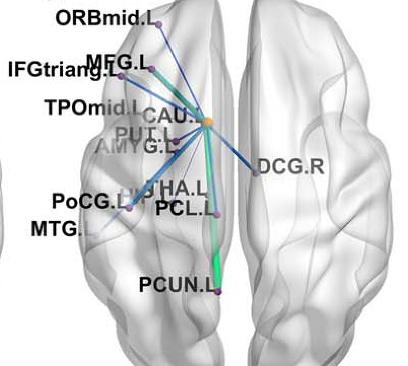
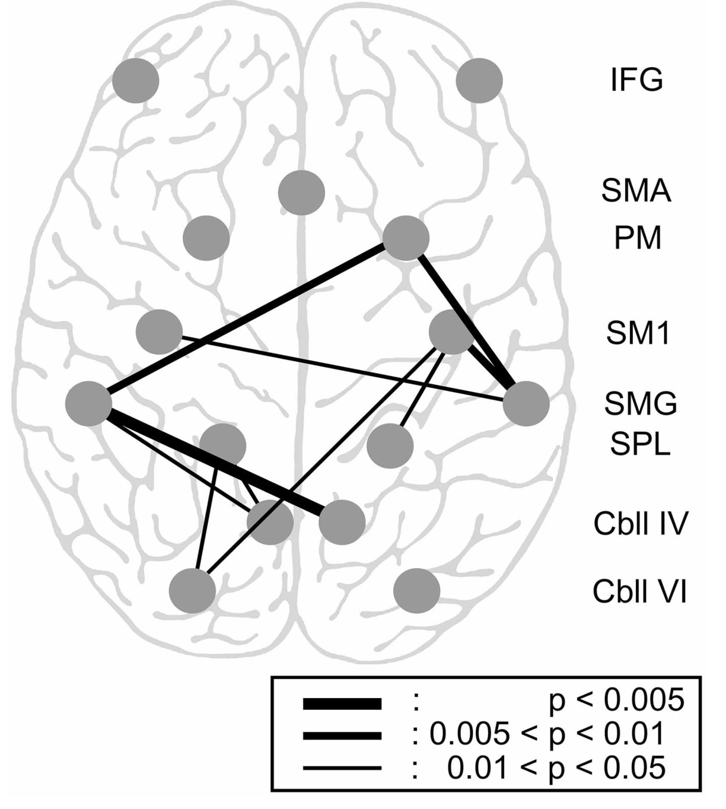
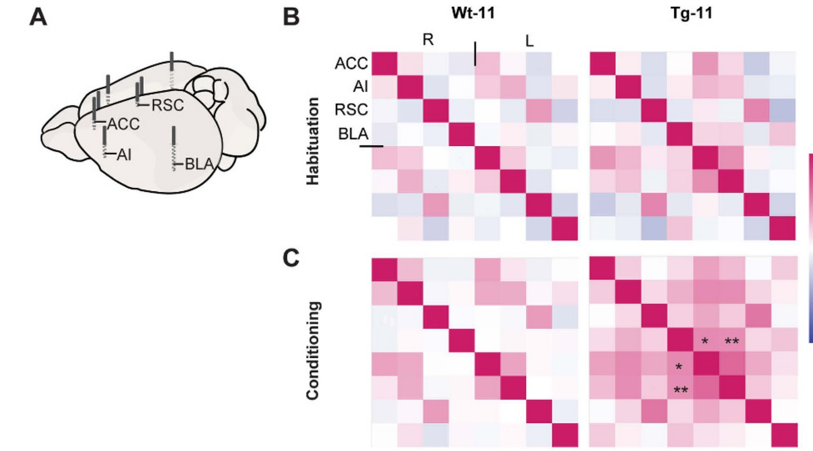
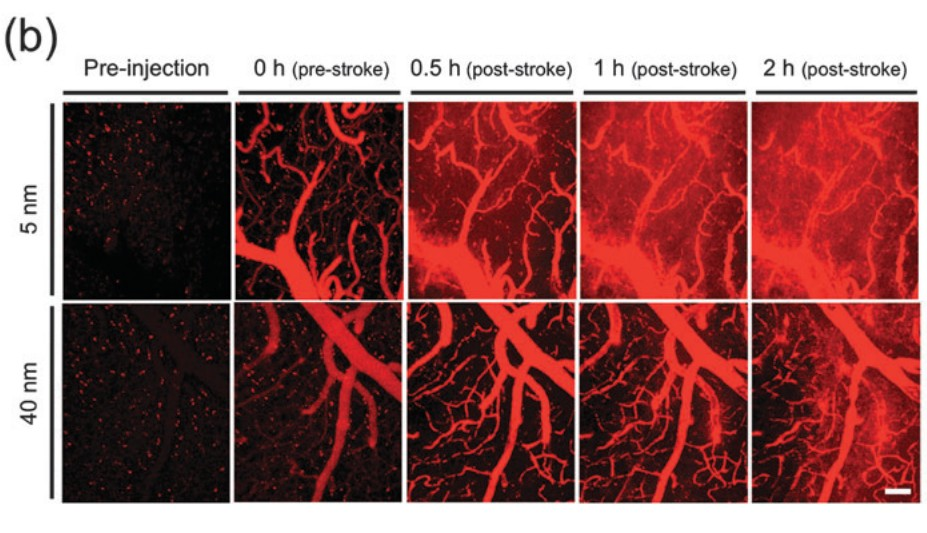
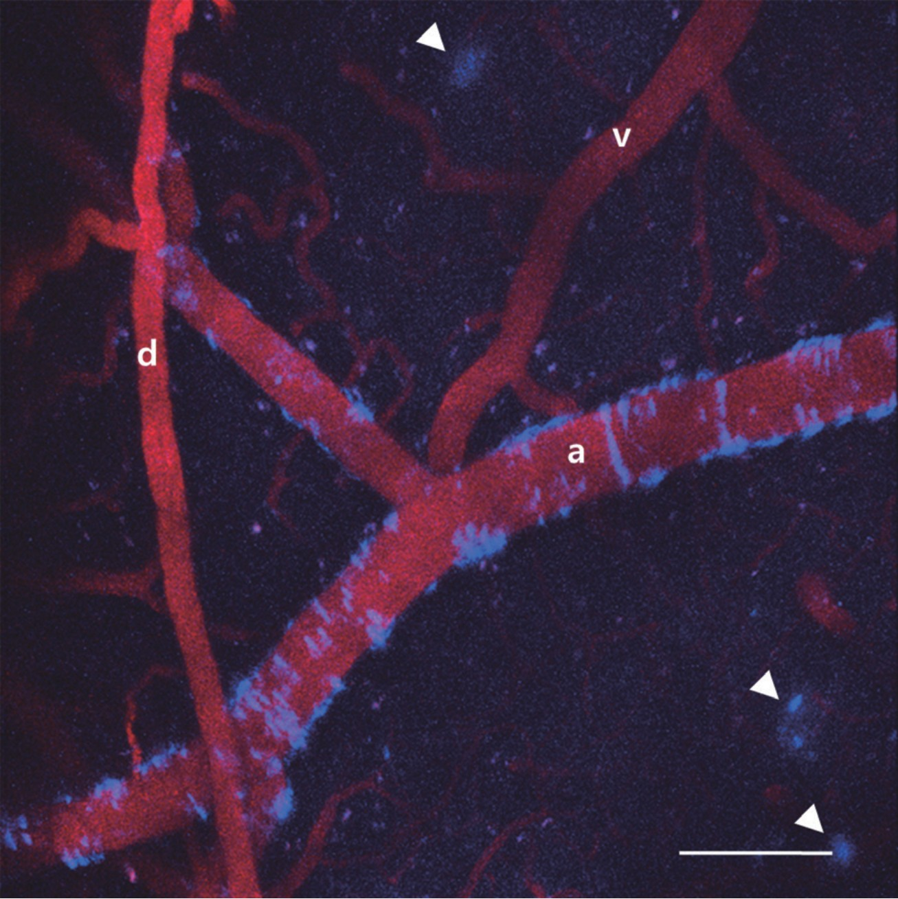
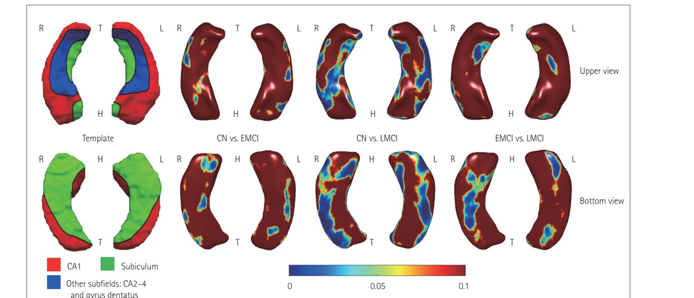
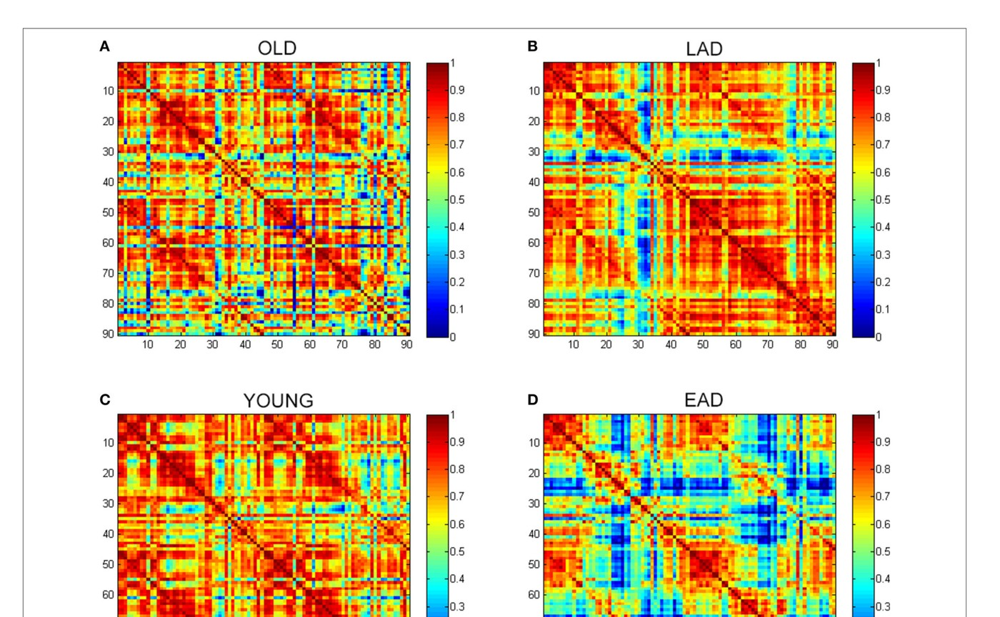
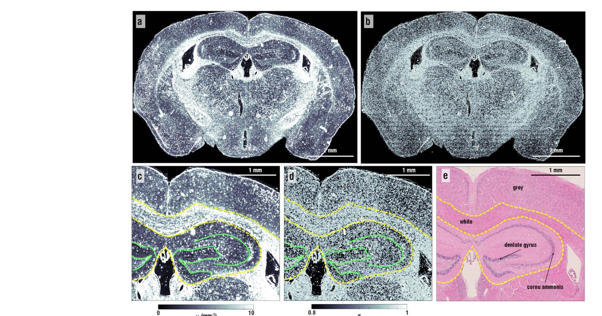
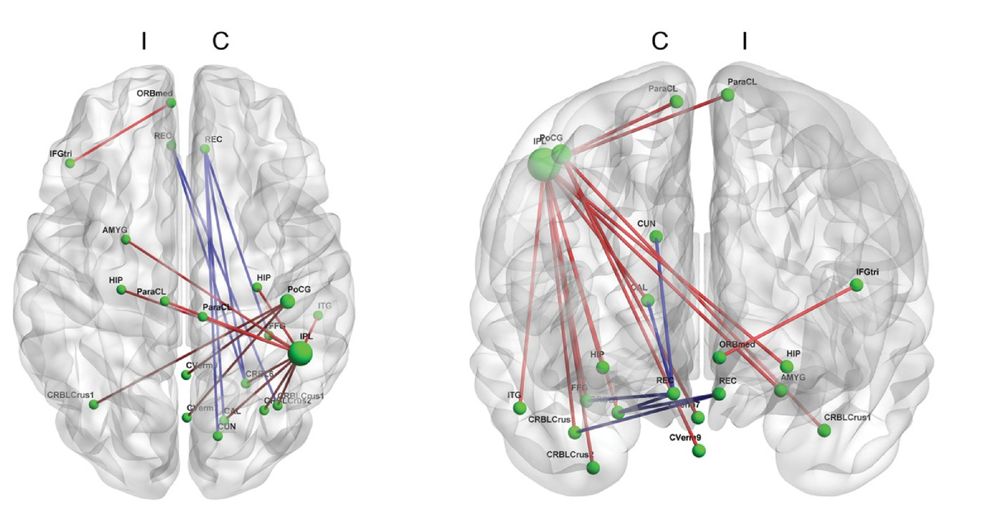

Research
“Investigate the brain with innovative ideas for integrative understanding”
Dual goals
To understand the biological mechanisms underlying cognition with network perspectives, and apply acquired knowledge to translational research for neurodegenerative disease.
Theme 01
Brain Network & Cognition
Explore the integrative nature of brain function from a micro to a large-scale network, and study the biological mechanisms of the brain to investigate organization and function.



Cognitive Neuroscience
Explore the integrative nature of brain function from a micro to a large-scale network to understand higher cognitive function
Tool-use practice induces changes in intrinsic functional connectivity of parietal areasFront. Neurosci, 2013
Brain Res, 2016
Sci Rep, 2017Elevated emotional contagion in a mouse model of Alzheimer's disease with increased synchronization
Sci Rep, 2017
Brain Network
Study the biological mechanisms of the brain to investigate organization and function using state of the art imaging modalities
Degree-based statistic and center persistency for brain connectivity analysis (HBM Jan 2017 Journal Cover Image)Hum Brain Mapp, 2017Sparse SPM: Group Sparse-dictionary learning in SPM framework for resting-state functional connectivity MRI analysis
Neuroimage, 2016Node Identification using inter-Regional Correlation Analysis for Mapping Detailed Connections in Resting State Networks
Front. Neurosci, 2017Altered intrinsic functional connectivity in the latent period epileptogenesis in a temporal lobe epilepsy model
Exp Neurol, 2017Momentary level of slow default-mode network activity is associated with distinct propagation and connectivity patterns in the anesthetized mouse cortex
J Neurophysiol, 2018
Theme 02
Multi-modal Brain Imaging
In vivo imaging of the brain across scales — MRI, PET, EEG, NIRS and optical imaging — in human subjects and animal models.



Multi-modal Brain Imaging
Explore the integrative nature of brain function from a micro to a large-scale network to understand higher cognitive functions
Normalization of cortical thickness measurements across different T1 MR imaging protocols by novel W-Score standardizationNeuroimage, 2017Morphological and Microstructural Changes of the Hippocampus in Early MCI: ADNI study
J. Clin Neurol, 2017In vivo images of cerebral amyloid angiopathy in Alzheimer's disease mouse model
J. Stroke, 2015In vivo multi-Photon luminescence imaging of cerebral vasculature and blood-brain barrier integrity using gold nanoparticles
J. Mat Chem, 2015Elevated emotional contagion in a mouse model of Alzheimer's disease with increased synchronization in the insula and amygdala
Sci Rep, 2017
Theme 03
Neurodegenerative & Neurovascular Disease
Investigate pathophysiology and treatment modalities of diseases that give perturbation to cognitive functions.



Neurodegenerative Disease (Alzheimer's disease etc.)
Investigate pathophysiology and treatment modalities of disease that give perturbation to cognitive functions
Glucose Metabolic Brain Networks in Early-onset vs. Late-Onset Alzheimer's DiseaseFront. Aging Neurosci., 2016A Network flow-based analysis of cognitive reserve in normal ageing and Alzheimer's Disease
Sci Rep., 2015Non-monotonic reorganization of brain networks with Alzheimer's disease progression
Front. Aging Neurosci, 2015Label-free optical quantification of structural alterations in Alzheimer's disease
Sci Rep, 2016Neural substrates of motor and non-motor symptoms in Parkinson's disease: a resting FMRI study
PLoS One, 2015
Neurovascular Disorder
Investigate pathophysiology and treatment modalities of vascular disorders that give perturbation to cognitive functions
Augmentation of sensory-evoked hemodynamic response in an early Alzheimer's disease mouse modelJ. Alzheimer Dis., 2013A Mouse Model of Subcortical Vascular Dementia Reflecting Degeneration of Cerebral White Matter and Microcirculation
J Cereb Blood Flow Metab, 2017In vivo Imaging of the Cerebral Endothelial Glycocalyx in Mice
J Vasc Res, 2017Blood Viscosity in Subcortical Vascular Mild Cognitive Impairment with versus without cerebral amyloid burden
J Stroke Cerebrovasc Dis, 2014